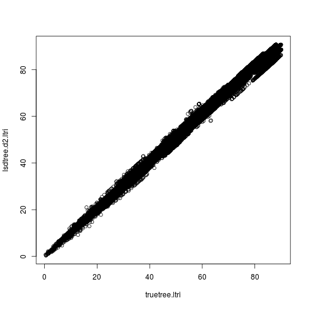

library(ape)
For least squares dating, all we need is a tree, plus how long the sequences were used to construct the tree.
stub <- "village_examl"
seq.len <- 6987
tr.fn <- paste(stub,".tre",sep="")
td.fn <- paste(stub,".td",sep="")
tr <- read.tree(tr.fn)
The sample times are in the sequence names at the end.
tipnames <- tr$tip.label
tipdates <- tipnames %>% strsplit(.,"_",fixed=TRUE) %>% lapply(.,tail,1) %>% unlist %>% as.double
Now save the sequence names and tip dates to a file.
write.table(rbind(c(length(tipnames),""),cbind(tipnames,tipdates)),td.fn,col.names=FALSE,row.names=FALSE,quote=FALSE)
Now run LSD.
lsd.cmd <- sprintf("lsd -i %s -d %s -c -n 1 -r -b %s -s %s -v",tr.fn,td.fn,paste(10),seq.len)
lsd <- system(lsd.cmd,intern=TRUE)
procresult <- function(fn){
result <- readLines(fn)
line <- result[grep("Tree 1 rate ",result)]
line.split <- strsplit(line, " ")[[1]]
list(rate=as.double(line.split[4]),tmrca=as.double(line.split[6]))
}
procresult(paste(stub,"_result.txt",sep=""))
## $rate
## [1] 0.002496
##
## $tmrca
## [1] -0.379016
lsdtree <- read.tree(paste(stub,"_result_newick_date.txt",sep=""))
How close is the tree to the true tree?
truetree <- read.tree("village_true.tre")
treedist(lsdtree,truetree)
## symmetric.difference branch.score.difference
## 96.00000 28.65891
## path.difference quadratic.path.difference
## 877.56652 1255.70485
Compare pairwise distances.
truetree.d <- cophenetic.phylo(truetree)
truetree.ltri <- truetree.d[lower.tri(truetree.d)]
lsdtree.d <- cophenetic.phylo(lsdtree)
ids <- row.names(truetree.d)
idx <- match(ids,row.names(lsdtree.d))
lsdtree.d2 <- lsdtree.d[idx,idx]
lsdtree.d2.ltri <- lsdtree.d2[lower.tri(lsdtree.d2)]
summary(lm(lsdtree.d2.ltri~truetree.ltri))
##
## Call:
## lm(formula = lsdtree.d2.ltri ~ truetree.ltri)
##
## Residuals:
## Min 1Q Median 3Q Max
## -6.3266 -0.6171 -0.1560 1.2715 5.3937
##
## Coefficients:
## Estimate Std. Error t value Pr(>|t|)
## (Intercept) 0.6949265 0.0148551 46.78 <2e-16 ***
## truetree.ltri 1.0085462 0.0001893 5326.69 <2e-16 ***
## ---
## Signif. codes: 0 '***' 0.001 '**' 0.01 '*' 0.05 '.' 0.1 ' ' 1
##
## Residual standard error: 1.184 on 483634 degrees of freedom
## Multiple R-squared: 0.9832, Adjusted R-squared: 0.9832
## F-statistic: 2.837e+07 on 1 and 483634 DF, p-value: < 2.2e-16
plot(lsdtree.d2.ltri~truetree.ltri)
